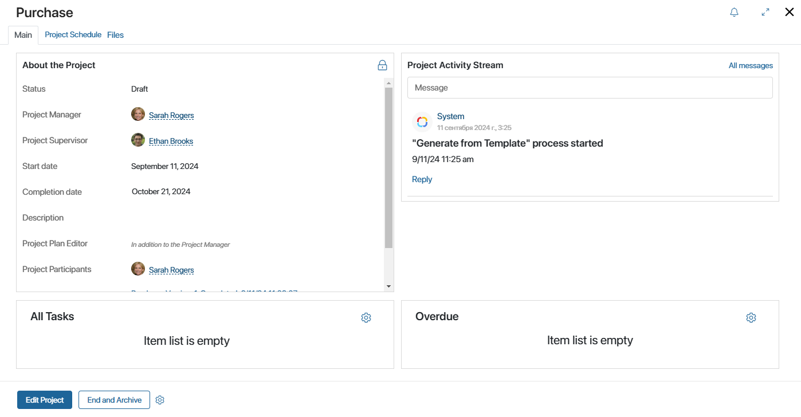
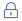
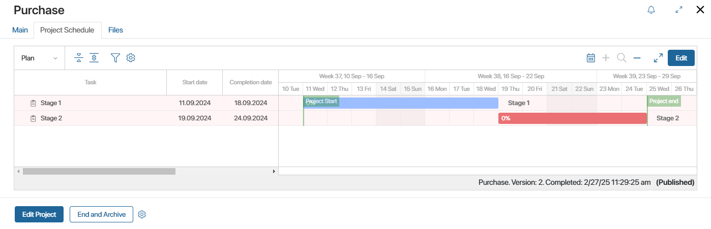
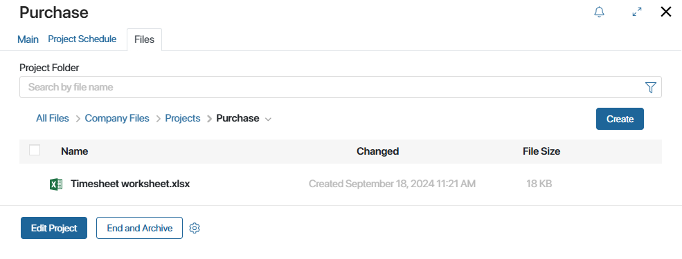

You can view project information on its page. It consist of the Main, Project Schedule, and Files tab.
Main tab

This tab consists of the following widgets:
- About the Project. This widget displays the data filled in when creating the project, as well as its status. Here you can open the current project plan and its previous versions. For employees with the permission to edit the project, the Edit Project button is available at the bottom of the page. It allows you to change the information in the About the Project widget. The system administrator can also display the Edit button directly in the About the Project widget. To edit access permissions, click .
- Project Activity Stream. Here you can discuss the project with your teammates. Also, all the system notifications regarding the project are displayed here. To learn more, see Associated activity stream.
- All tasks, Overdue. Here an employee can view all tasks assigned to them for the current project. Overdue tasks are marked with a red dot.
The list of tasks can be configured. For example, you can display the tasks of all projects you are a member of. Read more about this in the Manage project plan tasks article.
Project Schedule tab

Here you can create, edit, send for approval, and publish the project plan if you have the corresponding permissions. The current status of the plan is displayed in the bottom right corner. Executors have access to view and complete their tasks and change the percentage of their completion. Read more about it in the Project plan article.
Files tab

On this tab, you can add project documents, group them into folders and perform other actions with files. Read more about it in the Project files article.
Customize project page
The system administrator can customize the project page design:
- Rename widgets and tabs.
- Add other widgets to the page.
- Place widgets on separate tabs if there is much information in them.
- Create custom fields.
Read more about it in the Set up the Projects workspace article.
For example, the following widgets can be added:
- Project Milestones. The widget is available if the system administrator has added it to the project page form. Here you can view your tasks of the Milestone type in the current project.
The milestones list can be configured. For example, you can display tasks of all projects you are a member of or only overdue ones. You can read more about it in the Manage project plan tasks article.
- Project Board. The widget allows you to track the work with project tasks on the kanban board and add necessary statuses. In this case, it is convenient to display the widget on a separate tab.
Actions on the project page
The following actions on the project page are available for employees who have been granted access to edit the project by the system administrator:
- Edit Project. Change the information that is displayed in the About the Project widget. This action is available in a project with any status.
- Open. Start working with the project in the Draft status. The project page will show the In progress status. Make sure that the project is published so that its tasks are assigned to users.
- End and Archive. Archive the project with the In progress status. The project will be assigned the Completed status.
- Reopen. Restart work with an archived project. In this case, the project status will change to Draft.
The system administrator can change the project lifecycle settings and the set of actions on its page.
You can subscribe to a project to receive notifications from its activity stream. To do this, click the icon in the upper right corner of the page.
Found a typo? Select it and press Ctrl+Enter to send us feedback